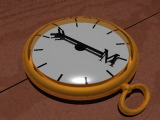
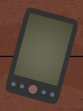
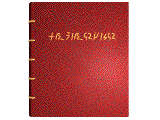

Some of the more interesting and unique items recovered during various
adventures are described here.

Current Owner: Piladon
Current Location: Piladon
Realm: Arcane
Found: from Edwin,
Knee Deep in the Dead
A palm-sized gold compass, whose needle points to the closest
Earth Node. Sigmund traded the compass to the Navigator Piladon for transport
across the Sea of Fire in
Demons of the Burning Night.
Current Owner:
Current Location: Edwin's shop
Realm: non-magical
Found: wrecked atmospheric fighter,
Knee Deep in the Dead
A wide-frequency communications package designed for use in
Coalition military aircraft. The comm package is designed as a black box
recorder and as an emergency communications pack for the crew should any
survive a catastrophic accident. The package has its own power supply and
user-friendly controls. It can monitor nearly all frequencies used by the
Coalition military.

Current Owner: Sigmund
Current Location: Sigmund
Realm: Mentalism
Found: Coalition base,
Knee Deep in the Dead
A pocket computer which must be attuned to operate. The computer
is a spell book. It contains the following lists:
- Open Mentalism: Detection to 50th level
- Open Mentalism: Delving to 50th level
- Open Mentalism: Illusions to 50th level
Current Owner:
Current Location: Edwin's shop
Realm: Channeling
Found: from Aroth,
Demons of the Burning Night
An ornately carved two handed war mattock, the word "Hullcrusher"
is carved on one side and a grinning demon visage on the other. Hullcrusher
is actually a grinning demon carved in the shape of a war mattock. The
demon is not intelligent. Hullcrusher is +30 to hit and suffers no penalties
for underwater use.
Current Owner: Chantille
Current Location: Sigmund
Realm: Essence
Found: from Elaine, Demons of the Burning Night
A pocket computer which must be attuned to operate. The computer
is a spell book. It contains the following lists:
- Open Essence: Delving Ways to 50th level
- Open Essence: Detecting Ways to 50th level
- Open Essence: Essence Perceptions to 50th level
Current Owner:
Current Location: Edwin's shop
Realm: Essence
Found: Obsidian tower, Demons of the Burning Night
A beautifully crafted bronze sextant. It adds +20 to Navigation
rolls at sea.
Current Owner: returned to Amarrishi
Current Location: returned to Amarrishi
Realm: ?
Found: moat of Terek'Knev,
Demons of the Burning Night
A long throwing lance, designed as a harpoon. The lance is made
of Xenium, a material with magical anti-gravity properties. Released in
mid-air it will remain, hovering until it is grasped again. It is +20 to
OB and is self returning (requiring a 60% action the next round to return).
It cannot be used in melee.
Frisbee returned the lance to the Amarrishi in
Smells Like Plasma, Tastes Like Chicken!
Current Owner:
Current Location: Edwin's shop
Realm: ?
Found: Vrama's Palace,
Demons of the Burning Night
Ornately decorated full plate armor. Currently sized to fit
a female human, will adjust to its attuned wearer's size. Protects as armor
type 20, encumbers as armor type 12, the armor floats in water. It protects
its wearer from attack by sea serpent, and has the power to summon a sea
serpent once per day.
Current Owner:
Current Location: Edwin's shop
Realm: ?
Found: battle with Porgno,
Demons of the Burning Night
Only the helm from Tilek's armor was recovered from the isle
of Aranmor. The powers of the helm by itself are unknown.
Current Owner: Sasfiry
Current Location: Sasfiry
Realm: Arcane
Found: Vrama-Ver's final torment,
Demons of the Burning Night
A fragile looking instrument inlaid with diamonds and inscribed
with "may the cities of thy enemies fall before thee". Anyone with bardic
skills may blow the horn, loosing a sonic blast which causes 100 points
of damage to everything within 200 yards (these are structural hits). Intelligent
creatures may make an RR at -20 to resist the 100 hits, and another RR
vs a 50th level Major Ultrasonics spell to avoid hearing damage.
All within 15 feet of the horn are safe and hear only a low moaning sound
and are not harmed (unless underground). The Horn of Siege may be sounded
only once every Turn of Varin. If blown twice in the same ten days it explodes,
doing d100 to everyone within 50 feet. If blown underground a total collapse
results in damage equivalent to the 50th level spell Quakes, and
all creatures in the vicinity must make an RR at -70 or be killed instantly
in the collapse.

Current Owner: Sigmund
Current Location: Sigmund
Realm: Channeling
Found: first floor of mansion,
Smells Like Plasma, Tastes Like Chicken!
A magic quill pen which aids in the inscription of spells on
rune paper. It is Channeling based, but can be used to inscribe spells
of any realm.
Current Owner: Sasfiry
Current Location: Sasfiry
Realm: ?
Found: first floor of mansion,
Smells Like Plasma, Tastes Like Chicken!
A silver hair comb. When worn by an attuned wearer adds +1 to
Pr and +15 to Appearance. Note that when Sasfiry wears it her Ap is raised
to 123, which is enough to drive men mad.
Current Owner: Sasfiry
Current Location: Sasfiry
Realm: ?
Found: first floor of mansion,
Smells Like Plasma, Tastes Like Chicken!
A small white pill held in the compartment of a silver pendant.
The pendant is magical, and preserves whatever is placed inside. Placed
under the tongue of someone who has died but whose soul has not departed,
the pill will grant indefinite lifekeeping. The pill dissolves under the
tongue and so can be used only once.
Current Owner: Chantille
Current Location: Prophet
Realm: ?
Found: first floor of mansion,
Smells Like Plasma, Tastes Like Chicken!
A hideous book bound in human flesh, the Tome of Demonology
was written by Nyon the Mad in stream-of-consciousness style. It is a nearly
complete tome on demonology, and is supremely detailed and supremely disorganized.
The Tome is inhabited by a particularly nasty demon which will initiate a Will
contest with anyone who touches the book. It is not known if the demon can be
exorcised without destroying the knowledge contained in the book.

Current Owner: Shizlink
Current Location: Shizlink
Realm: Arcane
Found: first floor of mansion,
Smells Like Plasma, Tastes Like Chicken!
A leather bound tome, the title written on the spine in High Elvish
with gilded lettering. The Incunabula was penned during the second age of Eire
some 10,000 years ago. The tome is occupied by a demon of Perdition which will
initiate a Will contest with anyone touching it. The demon is more mischevious
than cruel, and will tend to cause a violent purging of the bowels of anyone
who loses the Will battle. The Incunabula is an Arcane spell book with a number
of unique spell lists. It is not currently known if these lists are considered
Open or Closed lists.
- Closed Arcane: Arcane Summons to 12th level
- Unknown Arcane: Ethereal Mastery to 12th level
- Unknown Arcane: Metal Lore to 12th level
- Unknown Arcane: Stone Lore to 12th level
Current Owner: Blackhawk
Current Location: Blackhawk
Realm: not magical
Found: in pieces,
Smells Like Plasma, Tastes Like Chicken!
An ancient technological artifact of the Progenitors, the "Golden
Bowl" is the product of advanced biotechnology which can assume many forms
beyond that in which it was found. It is a psionic device, requiring
psychic attunement to unlock the full range of its powers. The attuned user
gains +30 to all Psychic Disciplines at all times. Additionally, the bowl
has a vast array of functions and powers which can be activated as the need
arises (not even Blackhawk is aware of all of the functions).
Current Owner: Blackhawk
Current Location: Blackhawk
Realm: not magical
Found: in sealed box,
Smells Like Plasma, Tastes Like Chicken!
An ancient technological artifact of the Progenitors, the Holy Symbol
is a repository for the mental consciousness of a number of Progenitors
which in certain circumstances can be called upon for aid (though it is not clear how
to do so).

Current Owner: Rolfo
Current Location: Rolfo
Realm: ?
Found: in concealed room,
Smells Like Plasma, Tastes Like Chicken!
The crystal flask which is always 3/4 full of pure, cool spring water.
It can produce an infinite supply of water. The silver plate will produce a fresh,
tasty loaf of bread every day at dawn.
Back to Entrance